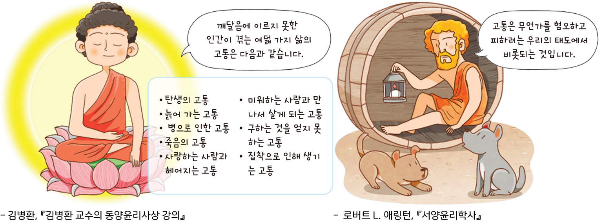

활동하기 우리는 왜 고통스러울까
● 다음은 고통에 대한 동양과 서양 사상가의 입장이다. 이를 바탕으로 내가 겪고 있는 고통 세 가지를 선택하고, 그 까닭을 써 보자.

● 다음은 고통에 대한 동양과 서양 사상가의 입장이다. 이를 바탕으로 내가 겪고 있는 고통 세 가지를 선택하고, 그 까닭을 써 보자.
| 나의 고통 | 선택한 까닭 |
|---|---|
| 부모님과의 관계 |
|
| 반려동물의 질병 |
|
| 성적 고민 |
|